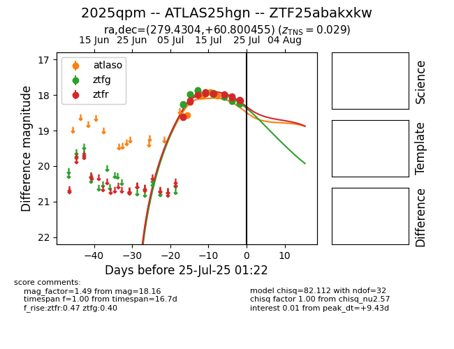

Target 2025qpm at 2025-08-06 10:17, see:
FINK: fink-portal.org/2025qpm
Lasair: lasair-ztf.lsst.ac.uk/objects/2025qpm
ALeRCE: alerce.online/object/2025qpm
TNS: wis-tns.org/object/2025qpm
YSE: ziggy.ucolick.org/yse/transient_detail/2025qpm
alt names
ZTF25abakxkw (ztf,fink)
2025qpm (tns,yse)
ATLAS25hgn (atlas)
coordinates:
equatorial (ra, dec) = (279.4304,+60.80046)
galactic (l, b) = (90.4042,+25.08801)
photometry
last atlasc=18.38, atlaso=18.31, ztfg=18.48, ztfr=18.19
1 atlasc, 10 atlaso, 25 ztfg, 26 ztfr detections
